토목기사 (2012-05-20 기출문제)
1과목: 응용역학
1. 그림과 같이 원(지름 40cm)과 반원(반지름 40cm)으로 이루어진 단면의 도심거리 y값은?
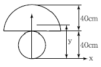
- 17.58cm
- 17.98cm
- 44.65cm
- 49.48cm
(정답률: 70%)

2. 폭 30cm, 높이 40cm인 직사각형 단면의 단순보에서 전단력 V＝20t이 작용할 때 중립축으로부터 위로 10cm 떨어진 점에서 전단응력은?
- 18.75kg/cm2
- 25.5kg/cm2
- 29.54kg/cm2
- 37.84kg/cm2
(정답률: 53%)
3. 다음 3힌지 아치에서 수평반력 HB를 구하면?
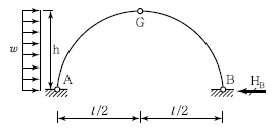
- 1/4wh
- 1/2wh
- wh/4
- 2wh
(정답률: 75%)
4. 그림과 같은 게르버보에서 A점의 수직반력 RA와 휨모멘트 력 MA는?
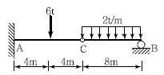
- RA＝2t(↓), MA＝40t ∙ m
- RA＝14t(↑), MA＝－88 ∙ m
- RA＝14t(↑), MA＝－216t ∙ m
- RA＝2t(↓), MA＝108t ∙ m
(정답률: 70%)
5. 세로 탄성계수 E＝2.1×106kg/cm2, 포아송비ν＝0.3일 때 전단 탄성계수 G를 구한 값은? (단, 등방이고 균질인 탄성체임)
- 7.2×105kg/cm2
- 3.2×106kg/cm2
- 1.5×106kg/cm2
- 8.1×105kg/cm2
(정답률: 83%)
6. 그림과 같이 단면적이 A1＝100cm2이고, A2＝50cm2인 부재가 있다. 부재 양끝은 고정되어 있고 온도가 10℃ 내려갔다. 온도 저하로 인해유발되는 단면력은? (단, E＝2.1×106kg/cm2, 선팽창계수(α)＝ 1×10-5/℃)
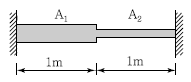
- 10,500kg
- 14,000kg
- 15,750kg
- 21,000kg
(정답률: 64%)
7. 평면응력상태 하에서의 모아(Mohr)의 응력원에 대한 설명 중 옳지 않은 것은?
- 최대 전단응력의 크기는 두 주응력의 차이와 같다.
- 모아 원의 중심의 x좌표값은 직교하는 두 축의 수직응력의 평균값과 같고 y좌표값은 0이다.
- 모아 원이 그려지는 두 축 중 연직(y)축은 전단응력의 크기를 나타낸다.
- 모아 원으로부터 주응력의 크기와 방향을 구할수 있다.
(정답률: 77%)
8. 다음의 1차 부정정보에서 A점의 모멘트 MA의 값은? (단, EI는 일정하다.)
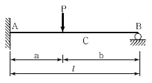
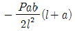
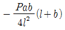
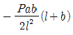
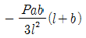
(정답률: 58%)
9. 직경 d인 원형단면 기둥의 길이가 4m이다. 세장비가 100이 되도록 하자면 이 기둥의 직경은?
- 12cm
- 16cm
- 18cm
- 20cm
(정답률: 83%)
10. 아래 그림과 같은 단순보에 등분포하중 w가 작용하고 있을 때 이 보에서 휨모멘트에 의한 변형에너지는? (단, 보의 EI는 일정하다.)
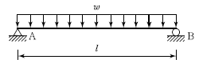
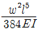
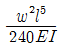
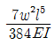
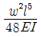
(정답률: 69%)
11. 다음 보의 C점의 수직처짐량은?
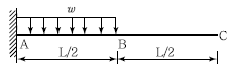
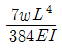
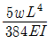
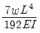
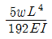
(정답률: 69%)
12. 다음 내민보 그림에서 점 A의 처짐은? (단, EI는 일정)
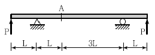
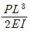
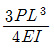
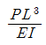
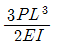
(정답률: 47%)
13. 아래 그림과 같은 플레이트(Plate)가 x ,y 축 방향으로 같은 응력 σa를 받고 있을 때 y축과 임의의 각 φ를 이루고 있는 면에서의 Normal Stress(σn)의 값은 얼마인가?
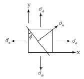
- σa
- 1.5σa
- 2σa
- 3σa
(정답률: 62%)
14. 그림과 같이 삼각형 분포하중이 작용하는 단순보에서 최대 휨모멘트가 발생하는 점 C의 위치는 A지점에서 거리 x 되는 곳이다. 여기서 x의 값은?
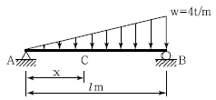
- 0.577l(m)
- 0.667l(m)
- 0.750l(m)
- 0.875l(m)
(정답률: 81%)
15. 점 C에 작용하는 하중 100kg으로 인해 부재BC에 발생하는 힘은?
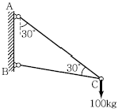
- 100kg(압축)
- 100kg(인장)
- 200kg(압축)
- 200kg(인장)
(정답률: 65%)
16. 다음 그림과 같은 구조물에서 B점의 수평변위는? (단, EI는 일정하다.)
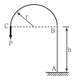
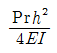
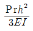
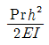
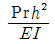
(정답률: 64%)
17. 다음 그림에서 A점의 모멘트 반력은? (단, 각부재의 길이는 동일함)
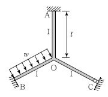
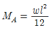
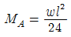
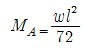
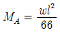
(정답률: 68%)
18. 연속보를 삼연모멘트 방정식을 이용하여 B점의 모멘트 MB＝-92.8t∙m을 구하였다. B점의 수직반력을 구하면?
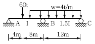
- 28.4t
- 36.3t
- 51.7t
- 59.5t
(정답률: 44%)
19. 그림에 표시한 것과 같은 단면의 변화가 있는 AB 부재의 강도(Stiffness Factor)는?
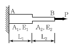
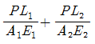
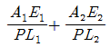
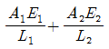
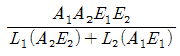
(정답률: 85%)
20. 그림과 같이 단순보에 이동하중이 재하될 때 절대 최대 모멘트는 약 얼마인가?
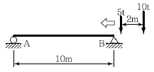
- 33t ∙ m
- 35t ∙ m
- 37t ∙ m
- 39t ∙ m
(정답률: 72%)
2과목: 측량학
21. 항공사진측량에서 산악지역(Accident Terrain 혹은 Mountainous Area)이 포함하는 의미로 옳은 것은?
- 산지의 면적이 평지의 면적보다 그 분포비율이 높은 지역
- 한 장의 사진이나 한 모델상에서 지형의 고저차가 비행고도의 10% 이상인 지역
- 평탄지역에 비하여 경사조정이 편리한 지역
- 표정 시에 산정(山頂)과 협곡에 시차분포가 균일한 지역
(정답률: 60%)
22. 1변의 거리가 30km인 정삼각형의 내각을 오차 없이 측량하였을 때에 내각의 합은? (단, 지구곡률반지름＝6,370km)
- 180°＋2ʺ
- 180°－2ʺ
- 180°＋1ʺ
- 180°－1ʺ
(정답률: 49%)
23. 홍수 시 유속측정에 가장 알맞은 것은?
- 봉부자
- 이중부자
- 수중부자
- 표면부자
(정답률: 76%)
24. 삼각측량을 위한 삼각망 중에서 유심다각망에 대한 설명으로 틀린 것은?
- 농지측량에 많이 사용된다.
- 삼각망 중에서 정확도가 가장 높다.
- 방대한 지역의 측량에 적합하다.
- 동일측점 수에 비하여 포함면적이 가장 넓다.
(정답률: 69%)
25. 그림과 같이 A, B, C, D 에서 각각 1, 2, 3,4km 떨어진 P점의 표고를 직접 수준측량에 의해 결정하기 위하여 A, B, C, D 4개의 수준점에서 관측한 결과가 다음과 같을 때 P 점의 최확값은?
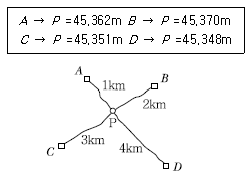
- 45.355m
- 45.358m
- 45.360m
- 45.365m
(정답률: 67%)
26. 대공표지의 설치에 대한 설명으로 옳지 않은 것은?
- 지상에 적당한 장소가 없을 때는 수목 또는 지붕위에 설치할 수 있다.
- 표석이 없는 지점에 설치할 때는 중심말뚝을 설치하여 그 중심을 표시한다.
- 대공표지 설치를 완료하면 지상사진을 촬영하고 대공표지 점의 조서를 작성하여야 한다.
- 설치장소는 시계의 영향은 거의 없지만 천정으로 부터 최소 15° 이상의 시계를 확보하는 것이 좋다.
(정답률: 65%)
27. 직접법으로 등고선을 측정하기 위하여 A점에 레벨을 세우고 기계 높이 1.5m를 얻었다. 70m등고선상의 P점을 구하기 위한 표척(Staff)의 관측값은? (단, A점 표고는 71.6m이다.)
- 1.0m
- 2.3m
- 3.1m
- 3.8m
(정답률: 75%)
28. 두 측점 간의 위거와 경거의 차가 Δ위거＝－156.145m, Δ경거＝449.152m일 경우 방위각은?
- 19°10ʹ11ʺ
- 70°49ʹ49ʺ
- 109°10ʹ11ʺ
- 289°10ʹ11ʺ
(정답률: 53%)
29. 교각(I)＝52°50ʹ, 곡선반지름(R)＝300m인 기본형 대칭 클로소이드를 설치할 경우 클로소이드의 시점과 교점(I.P)간의 거리(D)는? (단, 원곡선의 중심(M)의 X좌표(XM)＝37.480m, 이 정량(ΔR)＝0.781m이다.)
- 148.03m
- 149.42m
- 185.51m
- 186.90m
(정답률: 30%)
30. 지반고(hA)가 123.6m인 A점에 토털스테이션을 설치하여 B점의 프리즘을 관측하여, 기계고1.0m, 관측사거리( S ) 180m, 수평선으로부터의 고저각(α) 30°, 프리즘고(Ph) 1.5m를 얻었다면 B점의 지반고는?
- 212.1m
- 213.1m
- 277.98m
- 280.98m
(정답률: 55%)
31. 지오이드(Geoid)에 관한 설명으로 틀린 것은?
- 하나의 물리적 가상면이다.
- 지오이드면과 기준 타원체면과는 일치한다.
- 지오이드 상의 어느 점에서나 중력방향에 연직이다.
- 평균 해수면과 일치하는 등포텐셜면이다.
(정답률: 64%)
32. 완화곡선에 대한 설명으로 옳지 않은 것은?
- 완화곡선은 모든 부분에서 곡률이 같지 않다.
- 완화곡선의 반지름은 무한대에서 시작한 후 점차 감소되어 주어진 원곡선에 연결된다.
- 완화곡선의 접선은 시점에서 원호에 접한다.
- 완화곡선에 연한 곡선 반지름의 감소율은 캔트의 증가율과 같다.
(정답률: 72%)
33. 등고선의 성질에 대한 설명으로 옳지 않은 것은?
- 경사가 급할수록 등고선 간격이 좁다.
- 경사가 일정하면 등고선 간격이 일정하다.
- 등고선은 분수선과 직교하고, 합수선과 평행하다.
- 등고선의 최단거리 방향은 최대경사방향을 나타낸다.
(정답률: 64%)
34. 90m의 측선을 10m 줄자로 관측하였다. 이때 1회의 관측에 ＋5mm의 누적오차와 ±5mm의 우연오차가 있다면 실제거리로 옳은 것은?
- 90.045±0.015m
- 90.45±0.15m
- 90±0.015m
- 90±0.15m
(정답률: 73%)
35. 30m에 대하여 3mm 늘어나 있는 줄자로써 정사각형의 지역을 측정한 경과 62,500m2이었다면 실제의 면적은?
- 62,512.5m2
- 62,524.3m2
- 62,535.5m2
- 62,550.3m2
(정답률: 64%)
36. 그림과 같이 수준측량을 실시하였다. A점의 표고는 300m이고, B와 C 구간은 교호수준측량을 실시하였다면, D점의 표고는? (단, A → B ＝－0.567m, B → C＝－0.886m, C → B＝±0.866m, C → D＝＋0.357m)
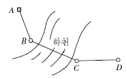
- 298.903m
- 298.914m
- 298.921m
- 298.928m
(정답률: 64%)
37. 평판측량에서 중심맞추기 오차가 6cm까지 허용한다면 이때의 도상축척의 한계는? (단, 도상 오차는 0.2mm로 한다.)
- 1/200
- 1/400
- 1/500
- 1/600
(정답률: 54%)
38. 그림과 같이 각 격자의 크기가 10m×10m로 동일한 지역의 전체토량은?
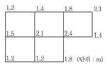
- 877.5m3
- 893.6m3
- 913.7m3
- 926.1m3
(정답률: 61%)
39. 클로소이드 곡선(Clothoid Curve)에 대한 설명으로 옳지 않은 것은?
- 고속도로에 널리 이용된다.
- 곡률이 곡선의 길이에 비례한다.
- 완화곡선(緩和曲線)의 일종이다.
- 클로소이드 요소는 모두 단위를 갖지 않는다.
(정답률: 77%)
40. 다음 중 전체 측선의 길이가 900m인 다각망의 정밀도를 1/2,600으로 하기 위한 위거 및 경거의 폐합오차로 알맞은 것은?
- 위거오차：0.24m, 경거오차：0.25m
- 위거오차：0.26m, 경거오차：0.27m
- 위거오차：0.28m, 경거오차：0.29m
- 위거오차：0.30m, 경거오차：0.30m
(정답률: 50%)
3과목: 수리학 및 수문학
41. 직경 10cm인 연직관 속에 높이 1m만큼 모래가 들어 있다. 모래면 위의 수위를 10cm로 일정하게 유지시켰더니 투수량 Q=4L/hr이였다. 이때 모래의 투수계수 k는?
- 0.4m/hr
- 0.5m/hr
- 3.8m/hr
- 5.1m/hr
(정답률: 49%)
42. Manning공식을 사용한 개수로 내 등류의 통수능(通水能) Ko는? (단, Ao：유수단면적, n：조도계수, Ro：수리평균심, Io：등류 때의 수면경사이다.)
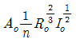
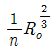
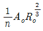
(정답률: 48%)
43. 다음 중 베르누이(Bernoulli)의 정리를 응용한 것이 아닌 것은?
- 토리첼리(Torricelli)의 정리
- 피토관(Pitot Tube)
- 벤투리미터(Venturimeter)
- 파스칼(Pascal)의 원리
(정답률: 62%)
44. 10℃의 물방울 지름이 3mm일 때 그 내부와 외부의 압력차는?(단, 10℃에서의 표면장력은 75dyne/cm이다.)
- 250dyne/cm2
- 500dyne/cm2
- 1,000dyne/cm2
- 2,000dyne/cm2
(정답률: 48%)
45. 지름 25cm, 길이 1m의 원주가 연직으로 물에 떠 있을 때, 물속에 가라앉은 부분의 길이가 70cm라면 원주의 무게는? (단, 무게 1kg＝10N)
- 252.5N(25.25kg)
- 343.6N(34.36kg)
- 423.5N(42.35kg)
- 503.0N(50.30kg)
(정답률: 52%)
46. 그림과 같은 노즐에서 유량을 구하기 위한 식으로 옳은 것은? (단, C는 유속계수이다.)
(정답률: 62%)
47. 지하수의 흐름에서 Darcy 법칙을 사용할 때의 가정조건으로 옳지 않은 것은?
- 흐름은 정상류이다.
- 다공층의 매질은 균일하며 동질이다.
- 유속은 입자 사이를 흐르는 평균이론유속이다.
- 흐름이 층류보단 난류인 경우에 더욱 정확하다.
(정답률: 68%)
48. 그림과 같이 여수로(餘水路) 위로 단위폭당 유량 Q＝3.27m3/sec가 월류할 때 ① 단면의 유속 V 1＝2.04m/sec, ② 단면의 유속 V2＝4.67m/sec라면, 댐에 가해지는 수평성분의 힘은? (단, 무게 1kg＝10N이고, 이상 유체로 가정한다.)
- 1,570N/m(157kg/m)
- 2,450N/m(245kg/m)
- 6,470N/m(647kg/m)
- 12,800N/m(1,280kg/m)
(정답률: 41%)
49. 단위중량 w 또는 밀도 ρ인 유체가 유속 V로서 수평방향으로 흐르고 있다. 직경 d, 길이 l인 원주가 유체의 흐름방향에 직각으로 중심축을 가지고 놓였을 때 원주에 작용하는 항력(D)은? (단, C：항력계수, g：중력가속도)
(정답률: 65%)
50. 직경 1m, 길이 600m인 강관 내를 유량 2m3/sec의 물이 흐르고 있다. 밸브를 1초 걸려 닫았을때 밸브 단면에서의 상승압력수두는? (단, 압력 파의 전파속도는 1,000m/sec이다.)
- 220m
- 260m
- 300m
- 500m
(정답률: 43%)
51. 강수량 자료를 분석하는 방법 중 이중 누가해석(Double Mass Analysis)에 대한 설명으로 옳은것은?
- 강수량 자료의 일관성을 검증하기 위하여 이용한다.
- 강수의 지속기간을 알기 위하여 이용한다.
- 평균 강수량을 계산하기 위하여 이용한다.
- 결측자료를 보완하기 위하여 이용한다.
(정답률: 76%)
52. 강우강도(I), 지속시간(D), 생기빈도(F) 관계를 표현하는 I-D-F관계식 에 대한 설명으로 틀린 것은?
- t：강우의 지속시간(min)으로서, 강우가 계속 지속될수록 강우강도( I )는 커진다.
- I：단위시간에 내리는 강우량(mm/hr)인 강우강도이며 각종 수문학적 해석 및 설계에 필요하다.
- T：강우의 생기빈도를 나타내는 연수(年數)로서 재현기간(연)을 말한다.
- k, x, n：지역에 따라 다른 값을 가지는 상수이다.
(정답률: 63%)
53. 단면적 20cm2인 원형 오리피스(Orifice)가 수면에서 3m의 깊이에 있을 때, 유출수의 유량은? (단, 물통의 수면은 일정하고 유량계수는 0.6이라 한다.)
- 0.0014m3/sec
- 0.0092m3/sec
- 14.4400m3/sec
- 15.2400m3/sec
(정답률: 66%)
54. 다음 설명 중 옳지 않은 것은?
- 자연하천에서 대부분 동일 수위에 대한 수위 상승 시와 하강 시의 유량이 다르다.
- 수위－유량 관계곡선의 연장방법인 Stevens법은 Chezy의 유속공식을 이용한다.
- 유량누가곡선의 경사가 급하면 홍수가 드물고 지하수의 하천방출이 크다.
- 합리식은 어떤 배수영역에 발생한 강우강도와 첨두유량 간 관계를 나타낸다.
(정답률: 58%)
55. 유출량 자료가 없는 경우에 유역의 토양특성과 식생피복상태 등에 대한 상세한 자료만으로서 도 총우량으로부터 유효우량을 산정할 수 있는 방법은?
- f－지표법
- φ－지표법
- W－지표법
- SCS법
(정답률: 56%)
56. 개수로에서 수로 수심이 1.5m인 직사각형 단면일 때 수리적으로 유리한 단면으로 계산한 수로의 경심(동수반경)은?
- 0.75m
- 1.0m
- 1.25m
- 1.5m
(정답률: 62%)
57. 2차원 비압축성 정류의 유속성분 u, v가 보기와 같을 때, 연속방정식을 만족하는 것은?
- u = 4x, v =4y
- u = 4x, v = -4y
- u = 4x, v =6y
- u = 4x, v = -6y
(정답률: 59%)
58. 유량 20m3/sec, 유효낙차 50m인 수력지점의 이론수력은?
- 1,000kW
- 4,900kW
- 9,800kW
- 10,000kW
(정답률: 69%)
59. 물이 가득 차서 흐르는 원형 관수로에서 마찰손실계수 f 를 Manning의 조도계수 n과 연관 시킨 식으로 옳은 것은? (단, d：관지름, R：동수반경, g：중력가속도)
(정답률: 68%)
60. S－curve와 가장 관계가 먼 것은?
- 직접 유출 수문곡선
- 단위도의 지속시간
- 평형 유출량
- 등우 선도
(정답률: 54%)
4과목: 철근콘크리트 및 강구조
61. 슬래브의 단경간 S＝4m, 장경간 L＝5m에 집중하중 P＝150kN이 슬래브의 중앙에 작용할 경우 장경간 L이 부담하는 하중은 얼마인가?
- 50.8kN
- 56.5kN
- 91.5kN
- 99.2kN
(정답률: 45%)
62. 강도설계법에 의해서 전단 철근을 사용하지 않고 계수하중에 의한 전단력 Vu＝50kN을 지지하려 면 직사각형 단면보의 최소 면적(bwd)은 약 얼마인가? (단, fck＝28MPa, 최소 전단철근도 사용하지 않는 경우)
- 151,190mm2
- 123,530mm2
- 97,840mm2
- 49,320mm2
(정답률: 65%)
63. 그림과 같이 활하중(wL)은 30kN/m, 고정하중(wD)은 콘크리트의 자중(단위무게 23kN/m3)만 작용하고 있는 캔틸레버보가 있다. 이 보의 위험단면에서 전단철근이 부담해야 할 전단력은? (단, 하중은 하중조합을 고려한 소요강도(U)를 적용하고, fck＝24MPa, fy＝300MPa이다.)
- 88.7kN
- 53.5kN
- 21.3kN
- 9.5kN
(정답률: 62%)
64. 전단철근이 부담하는 전단력 Vs＝150kN일 때, 수직스터럽으로 전단보강을 하는 경우 최대 배치간격은 얼마 이하인가? (단, fck＝28MPa, 전단철근 1개 단면적＝125mm2, 횡방향 철근의 설계기준항복강도( fyt)＝400MPa, bw＝300mm, d＝500mm)
- 600mm
- 333mm
- 250mm
- 167mm
(정답률: 50%)
65. 1방향 슬래브에 대한 설명으로 틀린 것은?
- 4변에 의해 지지되는 2방향 슬래브 중에서 단변에 대한 장변의 비가 2배를 넘으면 1방향 슬래 브로서 해석한다.
- 1방향 슬래브의 두께는 최소 80mm 이상으로 하여야 한다.
- 슬래브의 정모멘트 철근 및 부모멘트 철근의 중심간격은 위험단면에서는 슬래브 두께의 2배 이하이어야 하고, 또한 300mm 이하로 하여야 한다.
- 슬래브의 정모멘트 철근 및 부모멘트 철근의 중심간격은 위험단면을 제외한 단면에서는 슬래브 두께의 3배 이하이어야 하고, 또한 450mm 이하로 하여야 한다.
(정답률: 55%)
66. 직사각형 기둥(300mm×450mm)인 띠철근 단주의 공칭축강도(Pn)는 얼마인가? (단, fck＝28MPa, fy＝400MPa, Ast＝3,845mm2)
- 2,611.2kN
- 3,263.2kN
- 3,730.3kN
- 3,963.4kN
(정답률: 62%)
67. 프리스트레스트 콘크리트의 원리를 설명하는 개념 중 아래의 표에서 설명하는 개념은?
- 균등질 보의 개념
- 하중평형의 개념
- 내력 모멘트의 개념
- 허용응력의 개념
(정답률: 59%)
68. 유효깊이(d)가 450mm인 직사각형 단면보에 fy＝400MPa인 인장철근이 1열로 배치되어 있다. 중립축(c)의 위치가 압축연단에서 180mm인 경우 강도감소계수( φ)는?
- 0.817
- 0.824
- 0.835
- 0.843
(정답률: 64%)
69. 콘크리트의 설계기준강도가 35MPa, 철근의 항복강도가 400MPa로 설계된 부재에서 공칭지름이 25mm인 압축이형철근의 기본정착길이는?
- 425mm
- 430mm
- 1,010mm
- 1,015mm
(정답률: 59%)
70. 그림과 같은 두께 13mm의 플레이트에 4개의 볼트구멍이 배치되어 있을 때 부재의 순단면적을 구하면? (단, 볼트구멍의 직경은 24mm이다.)
- 4,⑤6mm2
- 3,916mm2
- 3,775mm2
- 3,524mm2
(정답률: 60%)
71. 강도설계법에서 fck＝30MPa, fy＝350MPa일 때 단철근 직사각형보의 균형철근비는?
- 0.0351
- 0.0369
- 0.0385
- 0.0391
(정답률: 58%)
72. 포스트텐션된 포물선 긴장재가 배치되었다. A단에서 잭킹(Jacking)할 때의 인장력은 900kN 이었다. 강재와 쉬스의 마찰손실을 고려할 때 상대편 지지점 B단에서의 긴장력 Px는 얼마인가? (단, 파상마찰계수 k ＝0.0066/m, 곡률마찰계수 μ＝0.30/radian이고, θ＝0.3×2/9＝1/15(radian)이며, 근사식을 사용하여 계산한다.)
- 777kN
- 829kN
- 900kN
- 1,043kN
(정답률: 46%)
73. Asʹ＝1,500mm2, As＝1,800mm2로 배근된 그림과 같은 복철근보의 탄성처짐이 10mm라 할 때, 5년 후 지속하중에 의해 유발되는 장기처짐은?
- 14.1mm
- 13.3mm
- 12.7mm
- 11.5mm
(정답률: 68%)
74. 아래 그림의 빗금친 부분과 같은 단철근 T형보의 등가응력의 깊이 a는 얼마인가? (단, As＝6,345mm2, fck＝240MPa, fy＝400MPa)
- 96.7mm
- 111.5mm
- 121.3mm
- 128.6mm
(정답률: 60%)
75. 그림에 나타난 이등변삼각형 단철근보의 공칭휨강도 Mn를 계산하면? (단, 철근 D19 3본의 단면적은 860mm2, fck＝28MPa, fy＝350MPa이다.)
- 75.3kN ∙ m
- 85.2kN ∙ m
- 95.3kN ∙ m
- 1⑤.3kN ∙ m
(정답률: 49%)
76. 주어진 T형 단면에서 전단에 대해 위험단면에서 Vud/Mu＝0.28이었다. 휨철근 인장강도의 40% 이상의 유효 프리스트레스트 힘이 작용할 때 콘크리트의 공칭전단강도(Vc)는 얼마인가? (단, fck＝45MPa, Vu：계수전단력, Mu：계수휨모멘트, d：압축측 표면에서 긴장재 도심까지의 거리)
- 185.7kN
- 230.5kN
- 321.7kN
- 462.7kN
(정답률: 40%)
77. 처짐을 계산하지 않는 경우 단순지지된 보의 최소 두께(h)로 옳은 것은?(단, 보통콘크리트(mc＝2,300kg/m3) 및 fy＝300MPa인 철근을 사용한 부재의 길이가 10m인 보)
- 429mm
- 500mm
- 537mm
- 625mm
(정답률: 58%)
78. 철근의 겹침이음 등급에서 A급 이음의 조건은 다음 중 어느 것인가?
- 배근된 철근량이 이음부 전체 구간에서 해석결과 요구되는 소요 철근량의 2배 이상이고 소요 겹침이음길이 내 겹침이음된 철근량이 전체 철근량의 1/3 이상인 경우
- 배근된 철근량이 이음부 전체 구간에서 해석결과 요구되는 소요 철근량의 2배 이상이고 소요 겹침이음길이 내 겹침이음된 철근량이 전체 철근량의 1/2 이하인 경우
- 배근된 철근량이 이음부 전체 구간에서 해석결과 요구되는 소요 철근량의 3배 이상이고 소요 겹침이음길이 내 겹침이음된 철근량이 전체 철근량의 1/3 이상인 경우
- 배근된 철근량이 이음부 전체 구간에서 해석결과 요구되는 소요 철근량의 3배 이상이고 소요 겹침이음길이 내 겹침이음된 철근량이 전체 철근량의 1/2 이하인 경우
(정답률: 66%)
79. 다음 중‘표피철근’의 정의로서 옳은 것은?
- 유효 깊이가 900mm를 초과하는 휨부재 복부의 양 측면에 부재 축방향으로 배치하는 철근
- 유효 깊이가 1,200mm를 초과하는 휨부재 복부의 양 측면에 부재 축방향으로 배치하는 철근
- 전체 깊이가 900mm를 초과하는 휨부재 복부의 양 측면에 부재 축방향으로 배치하는 철근
- 전체 깊이가 1,200mm를 초과하는 휨부재 복부의 양 측면에 부재 축방향으로 배치하는 철근
(정답률: 51%)
80. 프리스트레스트 콘크리트 휨부재에서 부분균열등급의 설계법에 대한 설명으로 옳은 것은?
- 사용하중에서의 응력을 계산할 때는 비균열 전단면을 사용한다.
- 처짐을 계산할 때는 비균열 전단면을 사용한다.
- 균열제어를 위해서 표피철근을 배치하여야 한다.
- 사용하중에 의한 인장연단응력을 0.63√fck이하로 제한하여야 한다.
(정답률: 25%)
5과목: 토질 및 기초
81. 다음 그림과 같이 피압수압을 받고 있는 2m 두께의 모래층이 있다. 그 위의 포화된 점토층을 5m 깊이로 굴착하는 경우 분사현상이 발생하지 않기 위한 수심(h)은 최소 얼마를 초과하도록 하여야 하는가?
- 0.9m
- 1.6m
- 1.9m
- 2.4m
(정답률: 56%)
82. rt＝1.8t/m3, cu＝3.0t/m2, φ＝0의 점토지반을 수평면과 50°의 기울기로 굴토하려고 한다. 안전율을 2.0으로 가정하여 평면활동 이론에 의한 굴토깊이를 결정하면?
- 2.80m
- 5.60m
- 7.12m
- 9.84m
(정답률: 35%)
83. 전단마찰각이 25°인 점토의 현장에 작용하는 수직응력이 5t/m2이다. 과거 작용했던 최대 하중이 10t/m2이라고 할 때 대상지반의 정지토압계수를 추정하면?
- 0.40
- 0.57
- 0.82
- 1.14
(정답률: 49%)
84. 활동면 위의 흙을 몇 개의 연직 평행한 절편으로 나누어 사면의 안정을 해석하는 방법이 아닌은?
- Fellenius 방법
- 마찰원법
- Spencer 방법
- Bishop의 간편법
(정답률: 57%)
85. 습윤단위 중량이 2.0t/m2, 함수비 20%, 흙의 비중 Gs＝2.7인 경우 포화도는?(오류 신고가 접수된 문제입니다. 반드시 정답과 해설을 확인하시기 바랍니다.)
- 86.1%
- 87.1%
- 95.6%
- 100%
(정답률: 59%)
86. 다음 시료채취에 사용되는 시료기(Sampler) 중 불교란시료 채취에 사용되는 것만 고른 것으로 옳은 것은?
- (1), (2), (3)
- (1), (2), (4)
- (1), (3), (4)
- (2), (3), (4)
(정답률: 55%)
87. 다음 점성토의 교란에 관련된 사항 중 잘못된 것은?
- 교란 정도가 클수록 e－log P곡선의 기울기가 급해진다.
- 교란될수록 압밀계수는 작게 나타낸다.
- 교란을 최소화하려면 면적비가 작은 샘플러를 사용한다.
- 교란의 영향을 제거한 SHANSEP방법을 적용 하면 효과적이다.
(정답률: 47%)
88. 기초의 크기가 20m×20m인 강성기초로 된 구조물이 있다. 이 구조물의 허용각변위(Angular Distortion)가 1/500이라고 할 때, 최대 허용 부등침하량은?
- 2cm
- 2.5cm
- 4cm
- 5cm
(정답률: 52%)
89. 3m×3m인 정방형 기초를 허용지지력이 20t/m2인 모래지반에 시공하였다. 이 기초에 허용지지 력만큼의 하중이 가해졌을 때, 기초 모서리에서의 탄성 침하량은? (단, 영향계수(Is)＝0.561,지반의 포아송비(μ)＝0.5, 지반의 탄성계수(Es)＝1,500t/m2)
- 0.90cm
- 1.54cm
- 1.68cm
- 2.10cm
(정답률: 32%)
90. 점토층의 두께 5m, 간극비 1.4, 액성한계 50%이고 점토층위의 유효상재 압력이 10t/m2에서 14t/m2으로 증가할 때의 침하량은? (단, 압축지수는 흐트러지지 않은 시료에 대한 Terzaghi & Peck의 경험식을 사용하여 구한다.)
- 8cm
- 11cm
- 24cm
- 36cm
(정답률: 45%)
91. 수평방향투수계수가 0.12cm/sec이고, 연직방향 투수계수가 0.03cm/sec일 때 1일 침투유량은?
- 870m3/day/m
- 1,080m3/day/m
- 1,220m3/day/m
- 1,410m3/day/m
(정답률: 64%)
92. 어느 점토의 체가름 시험과 액 ㆍ소성시험 결과 0.002mm(2μm) 이하의 입경이 전시료 중량의 90%, 액성한계 60%, 소성한계 20%이었다. 이 점토 광물의 주성분은 어느 것으로 추정되는가?
- Kaolinite
- Illite
- Halloysite
- Montmorillonite
(정답률: 58%)
93. 흙의 모세관 현상에 대한 설명으로 옳지 않은 것은?
- 모세관 현상은 물의 표면장력 때문에 발생된다.
- 흙의 유효입경이 크면 모관상승고는 커진다.
- 모관상승 영역에서 간극수압은 부압, 즉 (－)압력이 발생된다.
- 간극비가 크면 모관상승고는 작아진다.
(정답률: 43%)
94. φ＝0°인 포화된 점토시료를 채취하여 일축압축시험을 행하였다. 공시체의 직경이 4cm, 높이가 8cm이고 파괴시의 하중계의 읽음 값이 4.0kg, 축방향의 변형량이 1.6cm일 때, 이 시료의 전단강도는 약 얼마인가?
- 0.07kg/cm2
- 0.13kg/cm2
- 0.25kg/cm2
- 0.32kg/cm2
(정답률: 50%)
95. 깊은 기초에 대한 설명으로 틀린 것은?
- 점토지반 말뚝기초의 주면마찰 저항을 산정하는 방법에는 α, β, λ방법이 있다.
- 사질토에서 말뚝의 선단지지력은 깊이에 비례하여 증가하나 어느 한계에 도달하면 더 이상 증가하지 않고 거의 일정해진다.
- 무리말뚝의 효율은 1보다 작은 것이 보통이나 느슨한 사질토의 경우에는 1보다 클 수 있다.
- 무리말뚝의 침하량은 동일한 규모의 하중을 받는 외말뚝의 침하량보다 작다.
(정답률: 33%)
96. 다짐에 대한 설명으로 옳지 않은 것은?
- 점토분이 많은 흙은 일반적으로 최적함수비가 낮다.
- 사질토는 일반적으로 건조밀도가 높다.
- 입도배합이 양호한 흙은 일반적으로 최적함수 비가 낮다.
- 점토분이 많은 흙은 일반적으로 다짐곡선의 기울기가 완만하다.
(정답률: 51%)
97. 직경 30cm 콘크리트 말뚝을 다동식 증기해머로 타입하였을 때 엔지니어링 뉴스 공식을 적용한 말뚝의 허용지지력은? (단, 타격에너지＝3.6tㆍm 해머효율＝0.8, 손실상수＝0.25cm, 마지막 25mm 관입에 필요한 타격횟수＝5)
- 64t
- 128t
- 192t
- 384t
(정답률: 44%)
98. 연약지반에 구조물을 축조할 때 피에조미터를 설치하여 과잉간극수압의 변화를 측정했더니 어떤 점에서 구조물 축조 직후 10t/m2이었지만, 4년 후는 2t/m2이었다. 이때의 압밀도는?
- 20%
- 40%
- 60%
- 80%
(정답률: 58%)
99. 피조콘(Piezocone) 시험의 목적이 아닌 것은?
- 지층의 연속적인 조사를 통하여 지층 분류 및 지층 변화 분석
- 연속적인 원지반 전단강도의 추이 분석
- 중간 점토 내 분포한 Sand Seam 유무 및 발달 정도 확인
- 불교란 시료 채취
(정답률: 62%)
100. 사질토 지반에서 직경 30cm의 평판재하시험 결과 30t/m2의 압력이 작용할 때 침하량이 10mm라면, 직경 1.5m의 실제 기초에 30t/m2의 하중이 작용할 때 침하량의 크기는?
- 28mm
- 50mm
- 14mm
- 25mm
(정답률: 46%)
6과목: 상하수도공학
101. 취수보의 취수구에서의 표준 유입속도는?
- 0.3～0.6m/sec
- 0.4～0.8m/sec
- 0.5～1.0m/sec
- 0.6～1.2m/sec
(정답률: 53%)
102. 하수도시설에 관한 설명으로 옳지 않은 것은?
- 하수도시설은 관거시설, 펌프장시설 및 처리장 시설로 크게 구별할 수 있다.
- 하수배제는 자연유하를 원칙으로 하고 있으며 펌프시설도 사용할 수 있다.
- 하수처리장시설은 물리적 처리시설을 제외한 생물학적ㆍ화학적 처리시설을 의미한다.
- 하수 배제방식은 합류식과 분류식으로 대별할 수 있다.
(정답률: 68%)
103. 정수장에서 1일 50,000m3의 물을 정수하는데 침전지의 크기가 폭 10m, 길이 40m, 수심 4m이고 2지를 가지고 있다. 2지의 침전지가 이론상 100% 제거할 수 있는 입자의 최소 침전속도는? (단, 병렬연결 기준)
- 31.25m/d
- 62.5m/d
- 125m/d
- 625m/d
(정답률: 62%)
104. Streeter-Phelps의 식을 설명한 것으로 가장 적합한 것은?
- 재폭기에 의한 DO를 구하는 식이다.
- BOD 극한 값을 구하는 식이다.
- 유하시간에 따른 DO 부족곡선식이다.
- BOD 감소곡선식이다.
(정답률: 50%)
1⑤. 침전지의 유효수심이 4m이고 체류시간이 5시간일 때 표면부하율은?
- 12.2m3/m2 ∙ ay
- 16.2m3/m2 ∙ ay
- 19.2m3/m2 ∙ ay
- 22.2m3/m2 ∙ ay
(정답률: 62%)
106. 완속여과지에 관한 설명으로 옳지 않은 것은?
- 넓은 부지면적을 필요로 한다.
- 응집제를 필수적으로 투입해야 한다.
- 비교적 양호한 원수에 알맞은 방법이다.
- 여과속도는 4～5m/d를 표준으로 한다.
(정답률: 71%)
107. 정수 중 암모니아성 질소가 있으면 염소소독 처리시 클로라민이란 화합물이 생긴다. 이에 대한 설명으로 옳은 것은?
- 소독력이 떨어져 다량의 염소가 요구된다.
- 소독력이 증가하여 소량의 염소가 요구된다.
- 소독력에는 거의 영향을 주지 않는다.
- 경제적인 소독효과를 기대할 수 있다.
(정답률: 49%)
108. 슬러지 팽화(Bulking)의 지표가 되는 것은?
- MLSS
- SVI
- MLVSS
- VSS
(정답률: 61%)
109. 도수관에 대한 설명으로 틀린 것은?
- 자연유하식 도수관의 최소평균유속은 0.3m/s로 한다.
- 액상화의 우려가 있는 지반에서의 도수관 매설시 필요에 따라 지반을 개량한다.
- 자연유하식 도수관의 허용 최대한도 유속은 3.0m/s로 한다.
- 도수관의 노선은 관로가 항상 동수경사선 이상이 되도록 설정한다.
(정답률: 68%)
110. 정수처리에서 쓰이는 입상활성탄처리를 분말활성탄처리와 비교할 때, 입상활성탄처리에 대한 설명으로 옳지 않은 것은?
- 장기간 처리시 탄층을 두껍게 할 수 있으며, 재생할 수 있어 경제적이다.
- 원생동물이 번식할 우려가 있다.
- 여과지를 만들 필요가 있다.
- 겨울에 누출에 의한 흑수현상 우려가 있다.
(정답률: 52%)
111. 관의 갱생공법으로 기존관 내의 세척(Cleaning)을 수행하는 일반적인 공법이 아닌 것은?
- 제트(Jet) 공법
- 로터리(Rotary) 공법
- 스크레이퍼(Scraper) 공법
- 실드(Shield) 공법
(정답률: 65%)
112. 는 합리식으로서 첨두유량을 산정할 때 사용된다. 이 식에 대한 설명으로 옳지 않은 것은?
- C는 유출계수로 무차원이다.
- I는 도달시간 내의 강우강도로 단위는 mm/hr이다.
- A는 유연면적으로 단위는 km2이다.
- Q는 첨두유출량으로 단위는 m3/sec이다.
(정답률: 63%)
113. 활성슬러지법에서 최종 침전지의 슬러지를 폭기조로 반송하는 이유는?
- 폭기조의 산소 농도를 일정하게 유지하기 위하여
- 폭기조 내의 미생물의 양을 일정하게 유지하기 위하여
- 최종 침전지 내의 침전성을 향상시키기 위하여
- 최종 침전지 내의 미생물의 양을 일정하게 유지 하기 위하여
(정답률: 49%)
114. 관거의 보호 및 기초공에 대한 설명으로 옳지 않은 것은?
- 관거의 부등침하는 최악의 경우 관거의 파손을 유발할 수 있다.
- 관거가 철도 밑을 횡단하는 경우 외압에 대한 관거 보호를 고려한다.
- 경질염화비닐관 등의 연성관거는 콘크리트기초를 원칙으로 한다.
- 강성관거의 기초공에서는 지반이 양호한 경우 기초를 생략할 수 있다.
(정답률: 61%)
115. 어느 도시의 장래 인구 증가 현황을 조사한 결과 현재 인구가 90,000명이고 연평균 인구 증가율이 2.5%일 때 25년 후의 예상 인구는?
- 약 167,000명
- 약 163,000명
- 약 160,000명
- 약 156,000명
(정답률: 54%)
116. 하수관로 내의 유속에 대한 설명으로 옳은 것은?
- 유속은 하류로 갈수록 점차 작아지도록 설계한다.
- 관거의 경사는 하류로 갈수록 점차 커지도록 설계한다.
- 오수관거는 계획 1일 최대오수량에 대하여 유속을 최소 1.2m/sec로 한다.
- 우수관거 및 합류관거는 계획우수량에 대하여 유속을 최대 3m/sec로 한다.
(정답률: 58%)
117. 공동현상(Cavitation) 방지책으로 옳지 않은 것은?
- 펌프의 회전수를 높인다.
- 흡입관의 손실을 가능한 한 작게 한다.
- 펌프의 설치위치를 가능한 한 낮추도록 한다.
- 흡입측 밸브를 완전히 개방하고 펌프를 운전한다.
(정답률: 64%)
118. 상수시설 중 침사지의 체류시간은 계획취수량의 몇 분을 표준으로 하는가?
- 10～20분
- 30～60분
- 60～90분
- 90～120분
(정답률: 51%)
119. 펌프의 흡입관에 대한 다음 사항 중 틀린 것은?
- 충분한 흡입수두를 가질 수 있도록 한다.
- 흡입관은 가능하면 수평으로 설치되도록 한다.
- 흡입관에는 공기가 혼입되지 않도록 한다.
- 펌프 한 대에 하나의 흡입관을 설치한다.
(정답률: 64%)
120. BOD가 200mg/L인 하수를 1,000m3의 유효용량을 가진 폭기조로 처리할 경우 유량이 10,000m3/d이면 BOD 용적부하량은?
- 1.0kg/m3 ∙ d
- 2.0kg/m3 ∙ d
- 3.0kg/m3 ∙ d
- 4.0kg/m3 ∙ d
(정답률: 63%)
우선 원의 지름이 40cm 이므로 반지름은 20cm 이다. 반원의 중심과 원의 중심을 연결하면 직각삼각형이 형성된다. 이 직각삼각형에서 반지름과 도심거리를 한 변으로 하는 직각삼각형을 만들 수 있다.
이 직각삼각형에서 반지름의 길이는 20cm 이고, 직각삼각형의 빗변은 원의 지름인 40cm 이다. 따라서 나머지 한 변의 길이는 피타고라스의 정리를 이용하여 구할 수 있다.
빗변^2 = 밑변^2 + 높이^2
40^2 = 20^2 + 높이^2
높이^2 = 40^2 - 20^2
높이 = √(40^2 - 20^2)
높이 = 36.06cm
따라서 도심거리는 반지름과 높이를 더한 값이다.
도심거리 = 20cm + 36.06cm
도심거리 = 56.06cm
하지만 문제에서는 보기 중에서 도심거리가 44.65cm 인 것을 찾으라고 했다. 이는 반올림한 값으로, 소수점 둘째자리에서 반올림하여 구한 값이다. 따라서 정답은 "44.65cm" 이다.